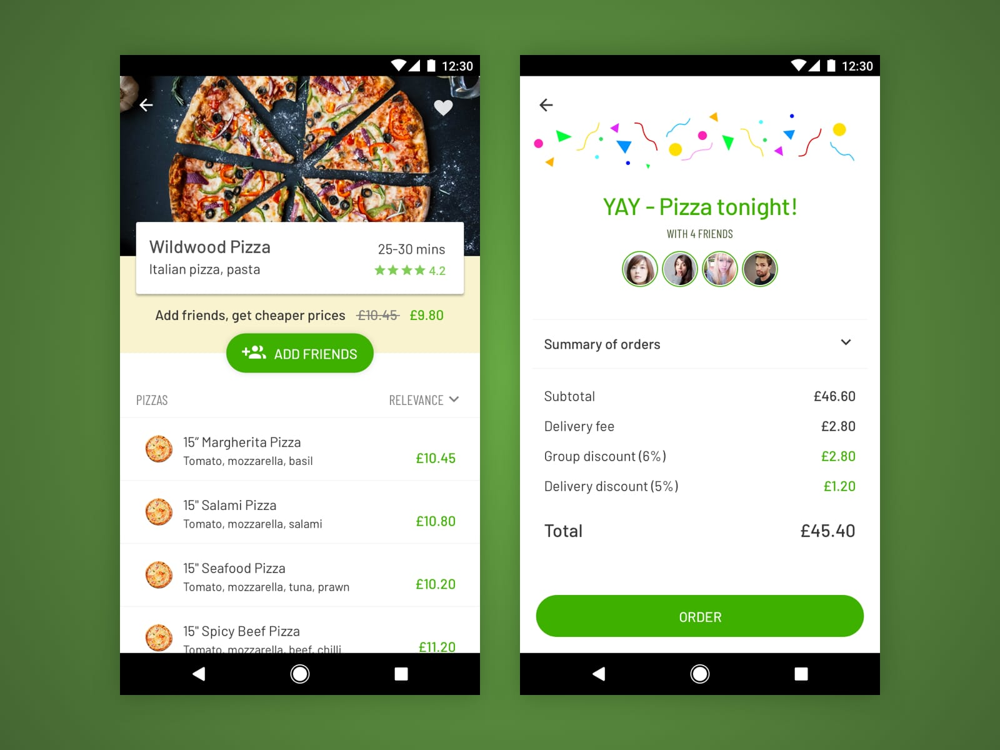
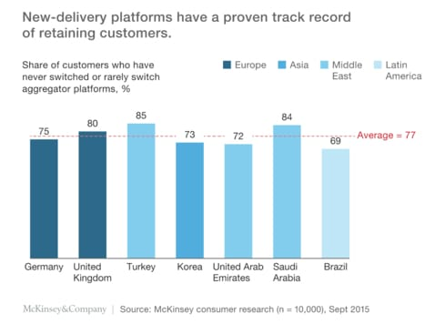
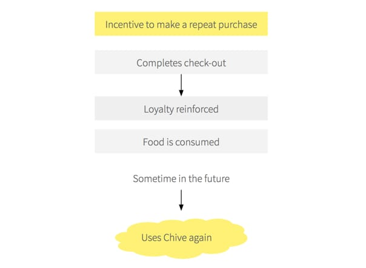
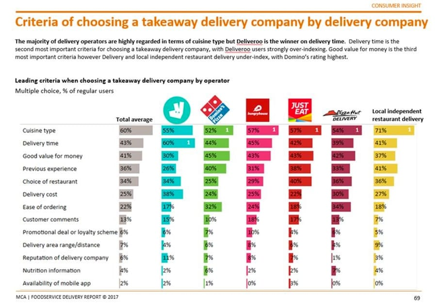
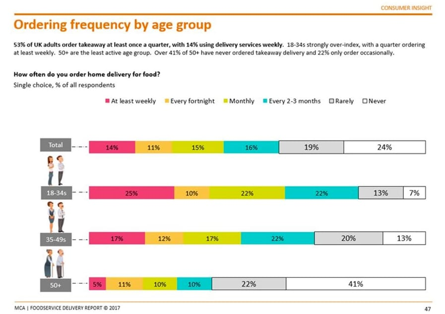
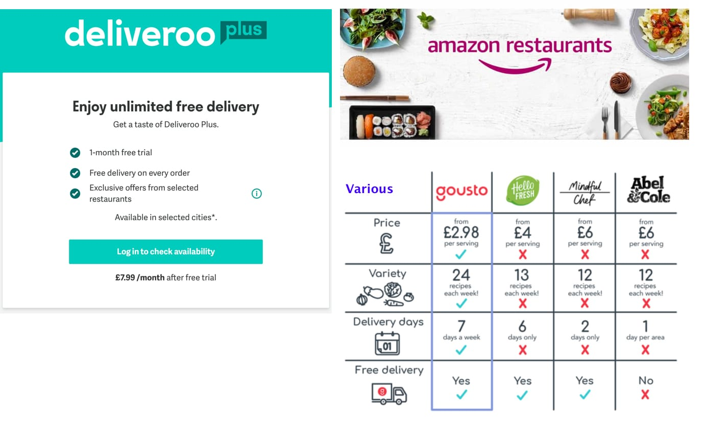
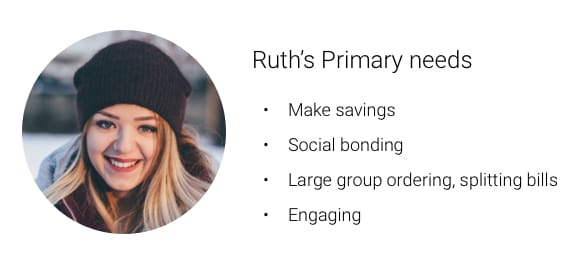

Overview
Food delivery is heating up, globally. Deliveroo, Uber Eats, Swiggy, Amazon, and a whole lot more are fighting it out for customer loyalty. I decided to take a stab at trying to understand rewarding loyalty in this space through a design challenge.
Framing the problem
For this hypothetical design challenge, I’ve conjured up a UK-based food delivery company, Chive. At some point in the future, Chive wants to treat the loyalty of their growing user base. The key stakeholders are looking for an incentive that could interest customers to make a repeat purchase, and amplify their brand awareness and perception.
Chive is built on the new-delivery model; controlling the end-to-end experience from order through to delivery. Loyalty is high for the new-delivery model (see right), however, competition from Deliveroo and Uber Eats is fierce. How can Chive offer users something that the competition doesn’t have and grab a share of the market?

Project scope
Before the project ballons, I needed to work out the project scope.
In scope
- A high-level take an incentive plan
- Communicating the incentive
- Placement and timing of incentive
- First-level branding and implementation of the incentive
Out of scope
- Hi-fi mocks for all parts of the ordering experience, including settings, profile and other auxiliary functions
- User testing plan, results and analysis

My high-level take on how I’ll approach this challenge.
Reasons to order
Promotional deals or loyalty schemes ranked low, between 4-10%, on reasons to choose a particular food delivery company. Food delivery apps are a very focused utility, i.e, you’re only going to open the app when you want to, or plan to eat.
It’s my hypothesis that food quality and value drive user satisfaction and the app experience is indirectly affected by a meal that doesn’t satisfy users’ expectations. Chive will want to make a connection with the user to drive re-engagement for repeat use.

Target user
18-34 represent the highest frequency user group. Digging into this, 25% order at least once a week and over 50% every month. Some other sources point to students, and their inability or lack of motivation to cook. Working professionals are the other target group, however, some sources point to a trend in ordering in meals to cook, as opposed to the standard delivery meal.

Loyalty programs
Subscriptions services for food delivery are on the rise. Subscriptions are a great way to build habit-forming behaviour, if made affordable enough for the the target user.
Deliveroo
Deliveroo Plus offer an annual subscription for £95.88
Amazon
Amazon Prime is also £95.88 for the year, but the delivery will still cost £1.99
Various
Pre-made cook boxes are a new trend in food delivery. These are meals you do need to cook yourself so don’t quite fall into the same field.

Defining the target group
UK students spend most of their budget on food delivery or takeaway because of convenience, and/or don’t know how to cook from scratch. It’s my assumption that students would not pay the up-front costs to subscribe to a service like Deliveroo or join Amazon Prime.
The margins are small, but Chive has the opportunity to gain traction with the student market, and since students have been trend-setters in tech markets, Chive could increase brand perception with similar age groups.
Student retention ideas
1. Social buying
Students can club together and drive down the price of a delivery through economies of scale, i.e bulk buying. Groups can customise their group for repeat purchases, split payments and avail cashbacks.
2. Off-peak discounts
Provide a time window during off-peak hours when restaurants aren’t busy and want to make sales. Students who’ve used the service before get notifications when there’s a lull in a sales and can get discounts in return.
3. Excess waste
Restaurants with soon-expiring food can create rush deals for students before the close of business. Choice would be limited, but the food should still match food hygiene standards. Students can opt-in for last-minute notifications.
Persona
User needs statement
Ruth is in her first year at university studying psychology in South London. This is her first time living away from home. She orders food delivery with her 5 flatmates at least three times a week. Ruth values social time with her friends over time spent in the kitchen. She feels the standard delivery fee is too expensive and cannot justify paying for a subscription service with Amazon or Deliveroo Plus. She needs a way to order food for everyone, but avoid paying an expensive £4 delivery fee or an up-front subscription.

Problem & incentive scheme overview
What is the business objective?
Increase user loyalty – get users invested in the product to use it again
What is the context of product use?
Food delivery to students, regular use 3 times p/week
What are the user goals?
- Make savings
- Social bonding/eating
- Ease of ordering groups, splitting bills (or not being left out of pocket)
Proposal
Social reward system for students.
1) Group discount
2) Loyalty reward each time they use the app
How it works
Students group their orders together into one transaction. Food discounts increase proportionally to the order size. Food delivery fees are reduced per delivery, creating a reason to use Chive again. Delivery discounts only apply to the same address. Example of some potential scaling:

High level flow
Understanding the end-to-end user journey is important to know when/where to make the incentive known to Ruth and even the students in the group. This is not the first order by Ruth, so user onboarding will not be covered.
- Ruth decides to order pizza with 4 other flatmates
- Ruth selects her address and a list of possible restaurants are shown.
- Ruth understands the incentives earned so far and what she will earn on the next order
- She selects the restaurant, “Wildwood Pizza”
- Ruth sets up the group and initiates bluetooth invites.
- The invite includes an incentive to join the order and get a bigger discount for everyone
- Each student joins the group and selects from the menu.
- Since Joe and Lisa from next door are in Ruth’s contacts, they also get bluetooth invites and join the order
- Ruth authorises Joe and Lisa’s request to join
- After food selection, each student has a time window to make payment to a virtual wallet which holds the money.
- Once all the students have ordered and paid, Ruth gets a confirmation screen. If any of the students fail to pay, or doesn’t order in time, Ruth can decide to change or cancel the order.
- Upon task completion, Ruth gets a summary of incentives earned, and this primes Ruth for the next time she wants food delivery.
Ideation and iteration
Visual concept
Hats off to some inspiration from some world-class designers on Dribbble! I Liked all your work shown :)
Chive is aiming for a Personality that’s social, vibrant, fresh, organic, transparent and foodie!
Mocks
These mocks focus on the user journey, I want to order pizza with my friends
Entry point
1. Background processes run and incentive value prop #1 is shown
2. Location is pinpointed and incentive value prop #2 is shown
3. The first screen provides a summary of stats around Ruth’s usage. Saving money is a big incentive to use Chive. But this doesn’t ‘block’ the primary action to order food.
Ordering
1. Adding friends is the primary CTA. To collapse, Ruth could scroll the food item list.
2. Ruth’s nearby contacts receive an invite. The circles animate to convey bluetooth sending a signal. Contacts can also be blacklisted in settings.
3. A scrollable list of contacts display. On-scroll would collapse the green signal animation.
Order success
1. Ruth’s friends receive a notification to join. Customisation and scheduling can also be achieved.
2. Once accepted, an avatar gets the 100% opacity green UI. Ruth can still order, nothing blocks her..
3. Animated confetti communicates task success. Brands can add their own ‘yay’ moment.
Project post-mortem
Did work
Overall, I was pleased with the complexity and challenge this project presented. The problem space was quite vast, and I think I narrowed down a good solution for the target user, Ruth.
Didn’t work
Scoping the project and time management were difficult to keep a hand on. There were large parts of the experience that I would have liked more time to work on, but given this was a hypothetical company, the prioritising would have been difficult.
Do differently
Simplifying everything right down from the start. My idea to capture two incentives may have watered down my final execution. Social was fun to work on, but the flat rate delivery fee discount was lacking some user delight.
Feedback
If you have any feedback or ways to improve this project, please get in touch through any of the social networks on my home page.